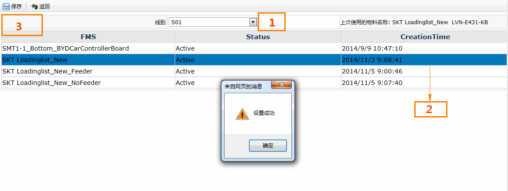
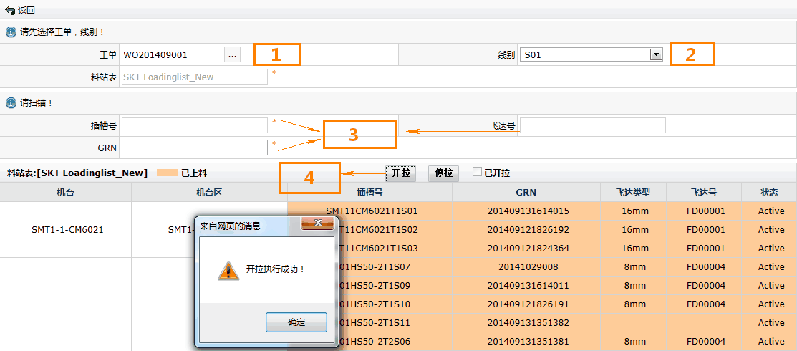
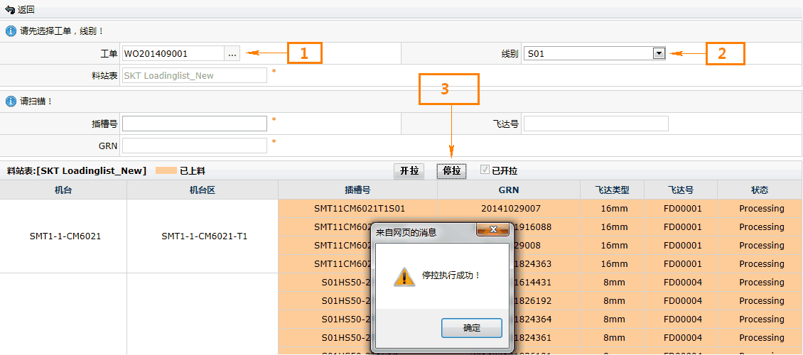
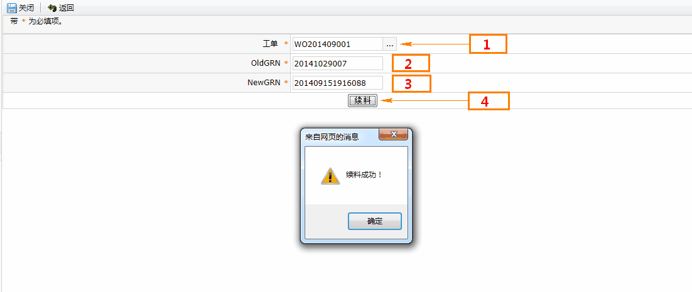

| 字段名 | 描述 |
| 线别 | 线别名称 |
| 料站表 | 上料文件清单名 |
| 状态 | Active：活动状态; Processing:处理状态，为开拉状态; StopLine:停拉状态; Locked:锁定状态; Complete:完成状态 |
| 创建时间 | 创建时间 |
| 工单 | 工单编号 |
| 线别 | 线别名称 |
| 料站表 | 上料文件清单名 |
| 插槽号 | 插槽对应的条码 |
| GRN | 物料条码 |
| 飞达类型 | 飞达对应的类型 |
| 飞达号 | 飞达条码 |
| 机台 | 机台名称 |
| 机台区 | 机台所属区 |
| OldGRN | 工单下面已上料用完的物料 |
| NewGRN | 新的物料，替换已经用完的物料 |



